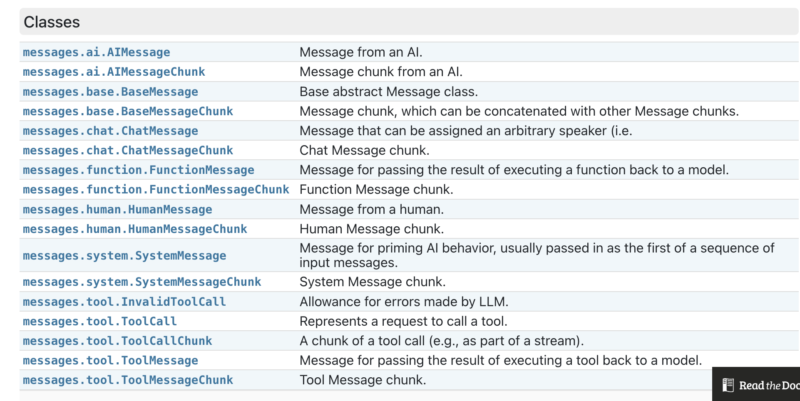

prompt = PromptTemplate.from_template("What is a good name for a company that makes {product}?") prompt.format(product="colorful socks") # 'What is a good name for a company that makes colorful socks?'
Message type
首先几种类型

HumanMessage: 来自人类/用户的ChatMessage。
AIMessage: 来自AI/助手的ChatMessage。
SystemMessage: 来自系统的ChatMessage。
FunctionMessage: 来自函数调用的ChatMessage。
1 2 3 4 5 6 7 8 9 10 11 12 13 14 15 16 17 18
from langchain.prompts.chat import ( ChatPromptTemplate, SystemMessagePromptTemplate, HumanMessagePromptTemplate, ) # 系统全局设定 template = "You are a helpful assistant that translates {input_language} to {output_language}." system_message_prompt = SystemMessagePromptTemplate.from_template(template)
chat_prompt.format_messages(input_language="English", output_language="Chinese", text="I love programming.") # [SystemMessage(content='You are a helpful assistant that translates English to Chinese.'), HumanMessage(content='I love programming.')]
parser
负责输出解析
1 2 3 4 5 6 7 8 9 10 11
from langchain.schema import BaseOutputParser
classCommaSeparatedListOutputParser(BaseOutputParser): """Parse the output of an LLM call to a comma-separated list."""
defparse(self, text: str): """Parse the output of an LLM call.""" return text.strip().split(", ")
from langchain.chains import LLMChain # 系统全局设定 # template = "You no nothing about {subject} and have no common sense." template = "You are an expert in {subject}." system_message_prompt = SystemMessagePromptTemplate.from_template(template)
chain.invoke({'subject':'math', 'text':'try to predict the next 5 numbers: 1, 1, 2, 3, 5'}) # {'subject': 'math', # 'text': ['A classic sequence!\n\nThis appears to be the Fibonacci sequence', # 'where each number is the sum of the two preceding ones:\n\n1', # '1', # '2', # '3', # '5', # "...\n\nIf that's correct", # 'the next five numbers would be:\n\n8', # '13', # '21', # '34', # '55\n\nAm I right?']}
LCEL
Langchain表达式, 官方描述的优势
流式支持
异步
并行处理
重试回退
中间结果访问
输入输出模式
LangSmith跟踪以提供可调试性
无缝LangServe集成
目前我只读到了并行.
1 2 3 4 5
from langchain_core.output_parsers import StrOutputParser prompt = ChatPromptTemplate.from_template('tell me a short joke about {topic}') output_parser = StrOutputParser() chain = prompt | llm | output_parser chain.invoke({'topic':'large language model'})
from langchain_community.vectorstores import DocArrayInMemorySearch from langchain_core.output_parsers import StrOutputParser from langchain_core.prompts import ChatPromptTemplate from langchain_core.runnables import RunnableParallel, RunnablePassthrough from langchain_community.chat_models.ollama import ChatOllama from langchain_community.embeddings.ollama import OllamaEmbeddings
vectorstore = DocArrayInMemorySearch.from_texts( ['harrison worked at kensho', 'bears like to eat honey'], embedding=OllamaEmbeddings(), )
retriever = vectorstore.as_retriever() template = '''Answer the question based only on the following context: {context} Question: {question} '''
chain = setup_and_retrieval | prompt | chatmodel | output_parser chain.invoke('what did bear eat?') # 'According to the provided context, bears like to eat honey.'
prompt = ChatPromptTemplate.from_template("tell me a joke about {topic}") chain = prompt | chatmodel chain.input_schema.schema(), chain.output_schema.schema()
stream
流式输出
1 2
for s in chain.stream({"topic": "bears"}): print(s.content, end="", flush=True)
invoke & batch
invoke输入执行, batch输入列表执行
1 2 3 4 5
chain.invoke({"topic": "bears"}) # AIMessage(content='Why did the bear go to the doctor?\n\nBecause it had a grizzly cough!\n\nHope that made you roar with laughter!', response_metadata={'model': 'llama3', 'created_at': '2024-04-26T18:59:12.682597827Z', 'message': {'role': 'assistant', 'content': ''}, 'done': True, 'total_duration': 2376927414, 'load_duration': 780076, 'prompt_eval_duration': 104313000, 'eval_count': 26, 'eval_duration': 2269974000}, id='run-1da506c7-4321-43b3-9a20-73e378bb5d53-0') chain.batch([{"topic": "bears"}, {"topic": "cats"}]) # [AIMessage(content="Here's one:\n\nWhy did the bear go to the doctor?\n\nBecause it had a grizzly cough!\n\nHope that made you roar with laughter!", response_metadata={'model': 'llama3', 'created_at': '2024-04-26T18:59:27.384268553Z', 'message': {'role': 'assistant', 'content': ''}, 'done': True, 'total_duration': 3058382240, 'load_duration': 446359, 'prompt_eval_count': 6, 'prompt_eval_duration': 415392000, 'eval_count': 30, 'eval_duration': 2641467000}, id='run-8fcefbc7-d3eb-424f-8328-ff1c4c9461c0-0'), # AIMessage(content='Why did the cat join a band?\n\nBecause it wanted to be the purr-cussionist!\n\nMeow-velous, right?', response_metadata={'model': 'llama3', 'created_at': '2024-04-26T18:59:24.325741194Z', 'message': {'role': 'assistant', 'content': ''}, 'done': True, 'total_duration': 2914778748, 'load_duration': 1199486, 'prompt_eval_count': 6, 'prompt_eval_duration': 425677000, 'eval_count': 29, 'eval_duration': 2484935000}, id='run-cd7e0e28-818e-4b4b-a5d6-60f71b815bf9-0')]